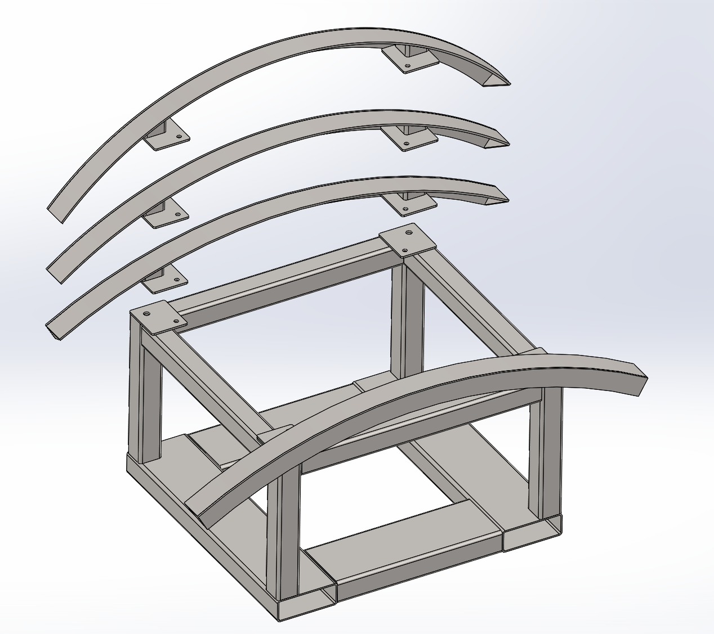
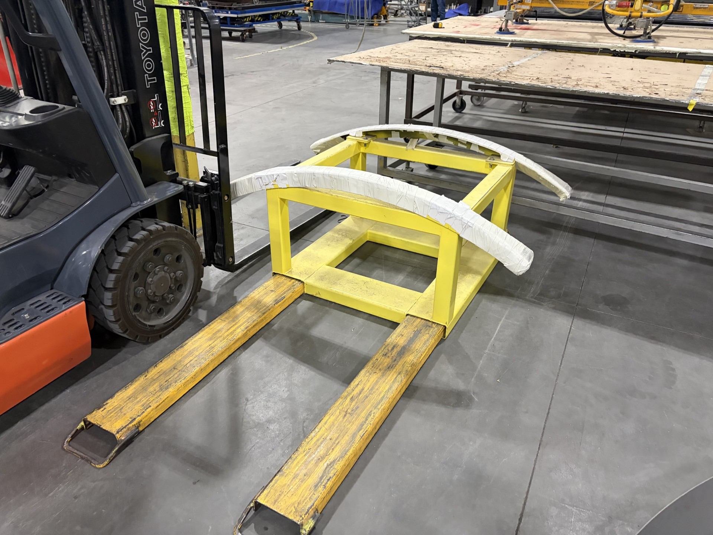

Problem Addressed
- Large-diameter duct requires stable support during fabrication
- Support needs vary with duct diameter
- The fixture needs to be movable within the production area
- Duct surfaces require appropriate support at the contact points
Project 04 | Material Handling & Assembly Support
Modular support fixture developed to provide stable support for large-diameter ductwork during handling and angle-ring installation.
Designed a forklift-mounted saddle for supporting large-diameter ductwork during angle-ring installation and related fabrication operations.
The fixture uses a rigid common base with curved support members that cradle the duct. The forklift provides a practical means of positioning the support fixture where it is needed in the production area.
The design allows different curved saddle assemblies to be used with the common base so the fixture can support multiple duct sizes.
A single structural base provides the forklift interface and supporting framework for the removable saddle assemblies.
Radius-specific curved support members can be changed to suit different duct diameters while retaining the same base fixture.
The CAD view shows the relationship between the common base and interchangeable curved saddle assemblies, while the installed view shows the completed forklift-mounted fixture on the shop floor.

Exploded CAD view showing the common base and interchangeable radius-specific saddle assemblies.

Completed forklift-mounted fixture with padded curved supports positioned for shop-floor use.
The modular approach allows the shop to retain one common base while changing the curved support geometry for different duct sizes. This reduces the need for separate complete fixtures while maintaining a dedicated support method for recurring fabrication work.
The completed fixture provides a stable and reusable support method for large-diameter ductwork. The forklift-compatible base allows the fixture to be positioned where required, while the curved padded supports help cradle the duct during angle-ring installation and fabrication.